Lesson10：NP问题
如果没有已知的一个多项式时间复杂度的算法来解决一个问题，那么这个问题被称为难的(hard)。
比如\(O(nlogn)\)就是多项式，\(O(n!)\)就不是多项式。
直觉上来说，最简单的问题就是那些直观的(然而这一直观也是抽象概念上的)，\(O(N)\)时间复杂(因为我们至少要把问题读进来)，最难的问题就是告诉我们答案我们仍然无法判断对错的，这种问题叫做undecidable problem。
例子：存不存在构筑一个新的C编译器，使得它能够找到所有无限循环？
\(P = NP\)问题
我们的情景中，每一步仅依赖于上一步的操作，就像推理数学题时只需要看latest的一步就能继续向下做。
图灵机包含无线大的内存(memory)，还有读写头。
如果说给定一个状态，我们能判断其下一个状态是否是唯一存在、确定的，那么称其为确定性图灵机，如果下一步有很多选择的，则是非确定性图灵机。
不确定图灵机可以用来验证NP问题的解是否是正确的，确定图灵机可以用来求解P问题。
就算是不确定性图灵机，在多个选择中有正确解也会转移到之。
可以在多项式时间复杂度内验证潜在解是不是正确解的问题叫做NP问题。
Example: 给定一个图判断其是否存在哈密尔顿回路，这是NP类问题
但是并非所有decidable problem都是NP类问题，比如判断一个图是否不存在哈密尔顿回路，不是NP类问题。
P类问题就是那些在多项式时间内可以解决的问题。
因此P类问题就是NP类问题的一个子集，因为能解决之显然就能够验证其潜在解的正误。\(P=NP\)则是在判断是否是真子集。
NP中最难的问题称为NP完全问题(NP-complete problem)。
所有NP问题都可以规约为NPC问题。
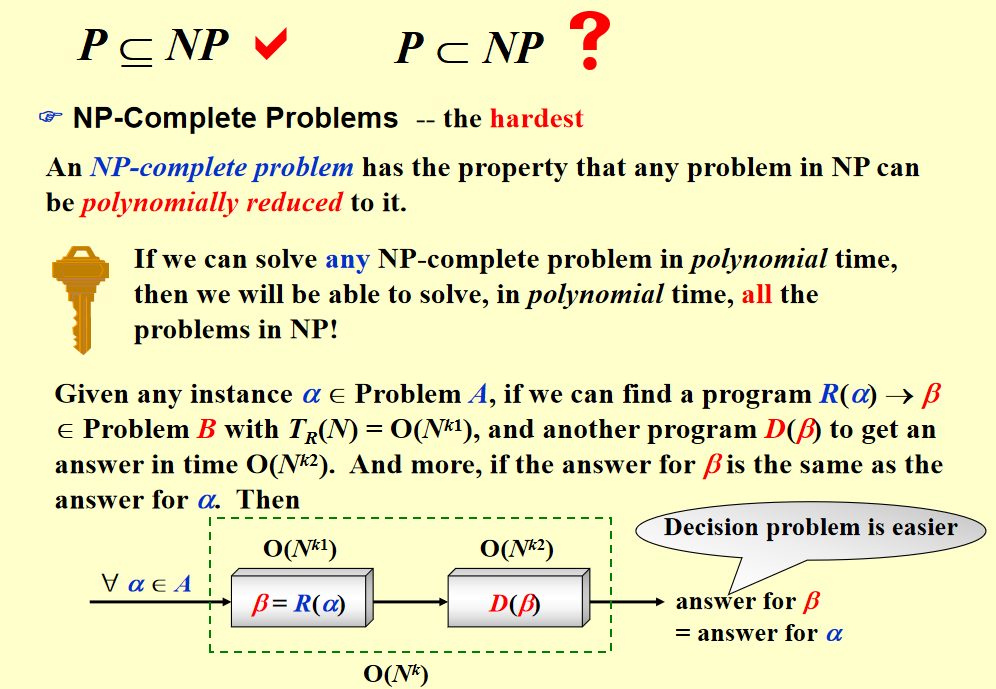
给定任意一个实例 \(\alpha \in \text{Problem A}\)，如果我们能够找到一个程序 \( R(\alpha) \)，将 \(\alpha\) 转换为 \(\beta \in \text{Problem B}\)，并且该程序的时间复杂度为 \( T_R(N) = O(N^{k_1}) \)，同时还有另一个程序 \( D(\beta) \) 用来求解 \(\beta\)，并且它的时间复杂度是 \( O(N^{k_2}) \)，并且进一步要求 \(\beta\) 的答案与 \(\alpha\) 的答案一致。那么，这就是 问题 A 规约于问题 B 的一种方式。
A不难于B。
难易与快慢是两个概念
我们假设A是一个NPC问题，那么我们要证明B也是一个NPC问题的话，只需要证明A可以归约为B即可。
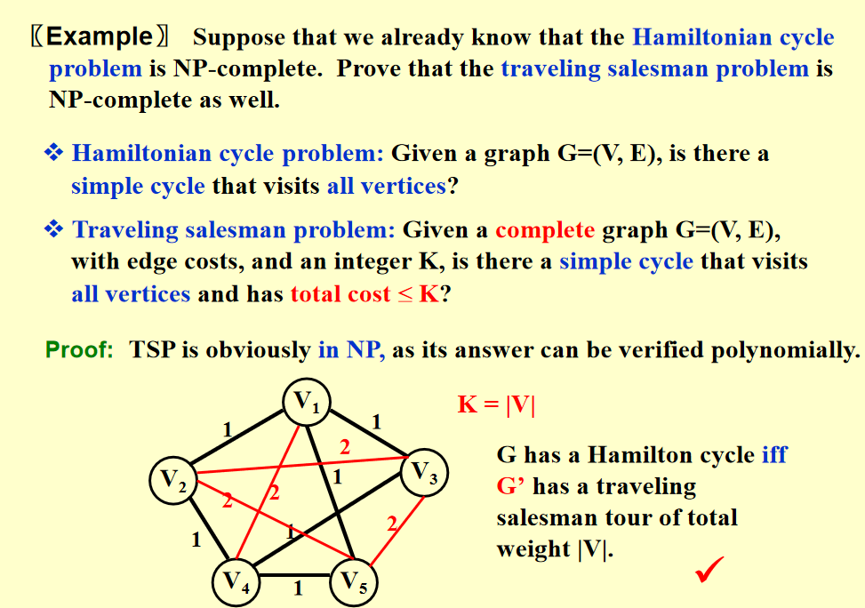
哈密尔顿回路问题规约到旅行商问题的示例。
第一个NPC问题是SAT问题。
A Formal-language Framework
抽象问题：定义在问题实例集合 I 和问题解集合 S 上的二元关系。
可以将其转换为binary(判定)问题(回答true or false的问题)，比方说最短路径是什么，我们假设潜在解是k，那么判断有无路径长度小于等于k，这样就变成判定问题了。
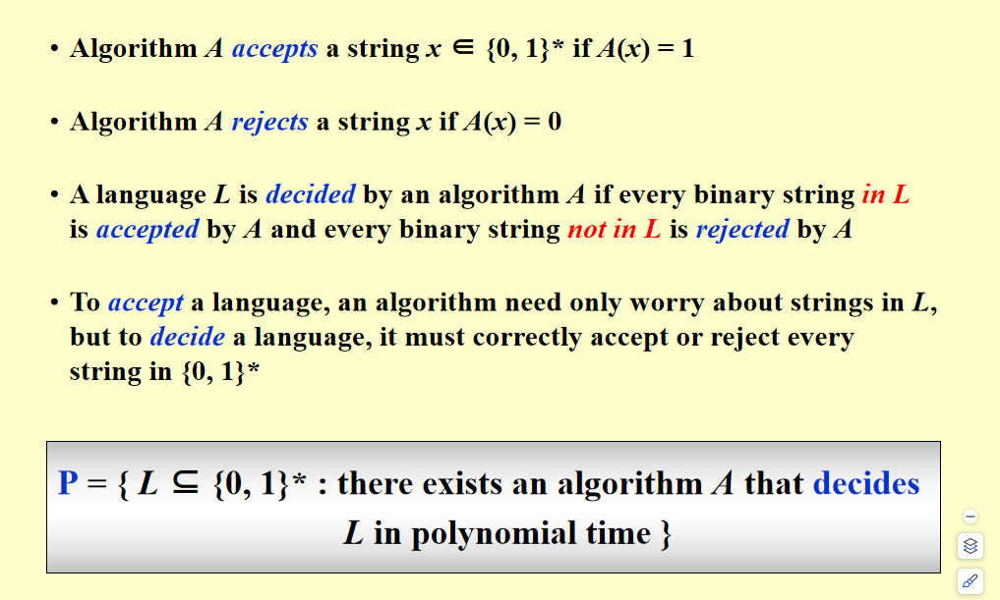
这是比较抽象的表达，我们这样理解，如果对于解答集合中的所有元素，alogithm给出1，非解答集合中的所有元素，algorithm给出0，那么这个算法可以判定这个问题(集合)。
P = { L ⊆ {0, 1}* : there exists an algorithm A that decides L in polynomial time }
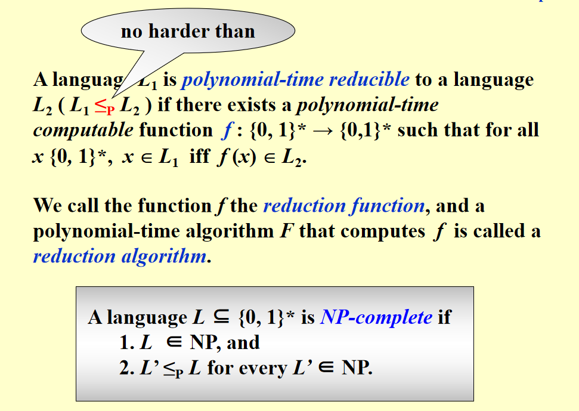
小于等于p的符号\(\leq_p\)
补：
- 在计算机科学中，可判定问题（decidable problem）指的是可以通过某种算法在有限的时间内解决的问题，换句话说，对于这个问题存在一个算法能够决定给定输入是否属于该问题的解集。
- 可判定问题：可以通过某种有效的算法进行解决。例如，整数的加法、排序、查找最大值等问题都是可判定的。
- 不可判定问题：无法通过任何算法在有限时间内解决。例如，著名的停机问题（Halting Problem）就是不可判定的。
- karp归约 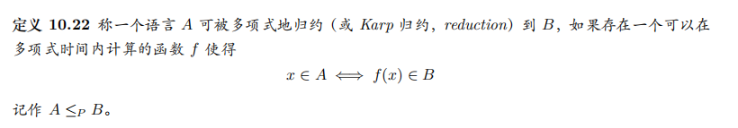
作业
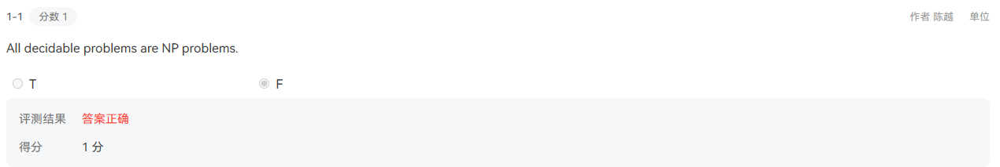
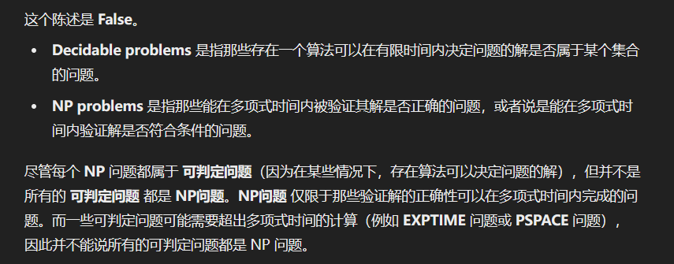
下一题是反过来问，不放了，所有NP问题都是可判定问题。
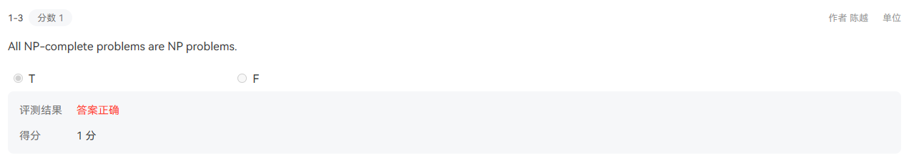
NPC问题是NP问题与NP-hard问题的交集，因此NPC问题就是NP问题。
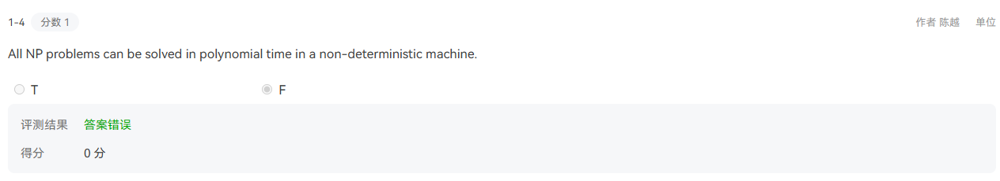
这是对的，NP问题就是指那些能被不确定图灵机(N)在多项式时间内(P)解决的问题。
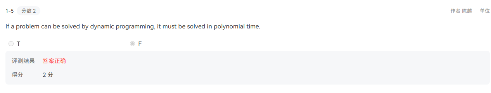
在wyy老师的讲义中就有提到过，比如0-1背包问题，时间复杂度为\(O(nC)\)，这个C是伪使时间复杂度的，因此不属于P类问题。
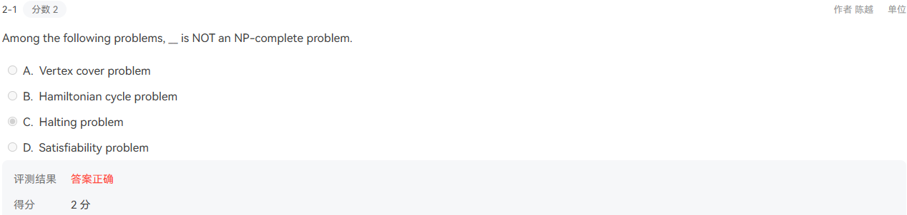
停机问题甚至是不可判定问题，因此必然不属于NP类问题。
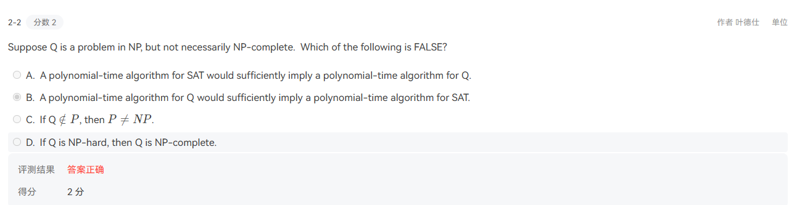
这跟A是不能反过来的，一个NPC=P那么所有NP=P，但是某个NP=P不一定能归约到NPC。